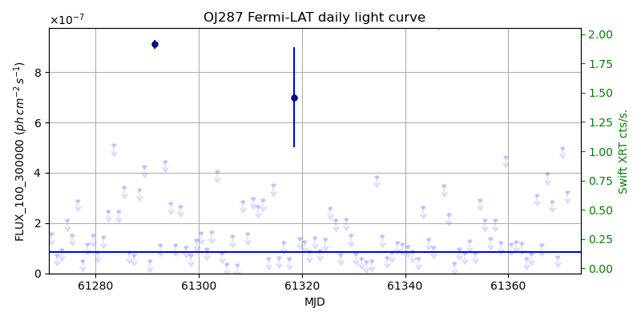
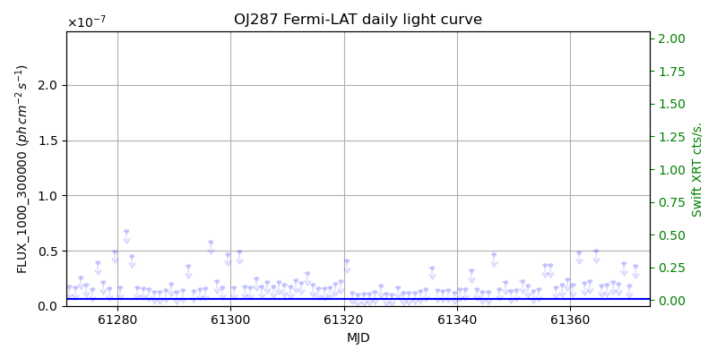
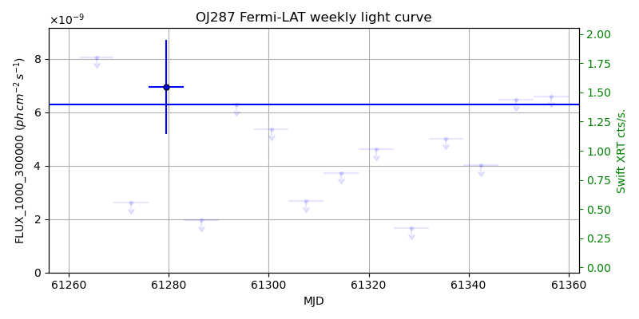

LAT Lightcurve site: https://fermi.gsfc.nasa.gov/ssc/data/access/lat/msl_lc/source/OJ_287
Swift site: https://www.swift.psu.edu/monitoring/source.php?source=OJ287
NED: Query
Time of last update of this page: UT: 2026-11-28 16:19 (MJD: 61372.681)
| Property | Value |
|---|---|
| R.A. | 8:54:48.96 |
| Dec. | 20:06:32.4 |
| z | 0.306 |
| 3FGL SpectrumType | LogParabola |
| 3FGL PL Index | |
| 3FGL Flux_100_300000 | 8.41e-08 1 / (s cm2) |
| 3FGL Flux_1000_300000 | 6.30e-09 1 / (s cm2) |
| 3FGL Flux >200 GeV | 5.46e-12 1 / (s cm2) |
| 3FGL Extrap. Crab >200 GeV | 0.02 |
| 3FGL Flux After EBL Absorption >200GeV | 1.90e-12 1 / (s cm2) |
| 3FGL EBL Crab Fraction >200GeV | 0.01 |

| MJD | dMJD | Flux | dFlux | Frac3FGL | FracCrab>200GeV | EBLFracCrab>200GeV |
|---|---|---|---|---|---|---|
| 61367.50 | 0.50 | 3.95e-07 | 0.00e+00 | 0.00 | 0.00 | 0.00 |
| 61368.50 | 0.50 | 2.87e-07 | 0.00e+00 | 0.00 | 0.00 | 0.00 |
| 61369.50 | 0.50 | 6.70e-08 | 0.00e+00 | 0.00 | 0.00 | 0.00 |
| 61370.50 | 0.50 | 4.99e-07 | 0.00e+00 | 0.00 | 0.00 | 0.00 |
| 61371.50 | 0.50 | 3.23e-07 | 0.00e+00 | 0.00 | 0.00 | 0.00 |
| MJD | dMJD | Flux | dFlux | Frac3FGL | FracCrab>200GeV | EBLFracCrab>200GeV |
|---|---|---|---|---|---|---|
| 61335.50 | 3.50 | 1.96e-08 | 0.00e+00 | 0.00 | 0.00 | 0.00 |
| 61342.50 | 3.50 | 3.61e-08 | 0.00e+00 | 0.00 | 0.00 | 0.00 |
| 61349.50 | 3.50 | 1.27e-07 | 0.00e+00 | 0.00 | 0.00 | 0.00 |
| 61356.50 | 3.50 | 1.38e-07 | 0.00e+00 | 0.00 | 0.00 | 0.00 |
| 61363.50 | 3.50 | 3.30e-08 | 0.00e+00 | 0.00 | 0.00 | 0.00 |

| MJD | dMJD | Flux | dFlux | Frac3FGL | FracCrab>200GeV | EBLFracCrab>200GeV |
|---|---|---|---|---|---|---|
| 61367.50 | 0.50 | 2.13e-08 | 0.00e+00 | 0.00 | 0.00 | 0.00 |
| 61368.50 | 0.50 | 2.02e-08 | 0.00e+00 | 0.00 | 0.00 | 0.00 |
| 61369.50 | 0.50 | 3.83e-08 | 0.00e+00 | 0.00 | 0.00 | 0.00 |
| 61370.50 | 0.50 | 1.85e-08 | 0.00e+00 | 0.00 | 0.00 | 0.00 |
| 61371.50 | 0.50 | 3.59e-08 | 0.00e+00 | 0.00 | 0.00 | 0.00 |

| MJD | dMJD | Flux | dFlux | Frac3FGL | FracCrab>200GeV | EBLFracCrab>200GeV |
|---|---|---|---|---|---|---|
| 61335.50 | 3.50 | 5.02e-09 | 0.00e+00 | 0.00 | 0.00 | 0.00 |
| 61342.50 | 3.50 | 4.02e-09 | 0.00e+00 | 0.00 | 0.00 | 0.00 |
| 61349.50 | 3.50 | 6.46e-09 | 0.00e+00 | 0.00 | 0.00 | 0.00 |
| 61356.50 | 3.50 | 6.61e-09 | 0.00e+00 | 0.00 | 0.00 | 0.00 |
| 61363.50 | 3.50 | 8.75e-09 | 0.00e+00 | 0.00 | 0.00 | 0.00 |
--------------------------------------------------------- Using user-supplied coords: 8:54:48.96 20:06:32.4 2000 --------------------------------------------------------- FLWO UT night of: 2026-11-29 Local Sid. @ Midnight: 04:08 Sunset (-15.0) (local, UT): 18:31 01:31 Sunrise (-15.0) (local, UT): 05:53 12:53 Moonrise (local, UT): 21:57 04:57 Moonset (local, UT): Moon phase: 0.72 --------------------------------------------------------- AzTime LSID UT Obj_el Obj_az Mn_el Mn_az Sep. --------------------------------------------------------- 18:31 22:39 01:31 -32.7 29.0 -32.9 32.1 2.6 19:01 23:09 02:01 -29.3 36.2 -29.4 38.9 2.3 19:31 23:39 02:31 -25.2 42.7 -25.4 45.0 2.1 20:01 00:09 03:01 -20.6 48.6 -21.0 50.6 1.9 20:31 00:39 03:31 -15.6 53.8 -16.2 55.6 1.8 21:01 01:09 04:01 -10.3 58.6 -11.1 60.2 1.8 21:31 01:39 04:31 -3.6 63.0 -5.4 64.5 1.8 22:01 02:09 05:01 1.4 67.0 0.4 68.5 1.9 22:31 02:39 05:31 7.2 70.8 5.8 72.2 2.0 23:01 03:10 06:01 13.2 74.4 11.6 75.8 2.1 23:31 03:40 06:31 19.4 77.9 17.5 79.4 2.3 00:01 04:10 07:01 25.7 81.4 23.6 82.9 2.5 00:31 04:40 07:31 32.0 84.9 29.7 86.5 2.7 01:01 05:10 08:01 38.4 88.6 35.8 90.3 2.9 01:31 05:40 08:31 44.8 92.6 42.0 94.4 3.1 02:01 06:10 09:01 51.2 97.2 48.1 99.1 3.3 02:31 06:40 09:31 57.5 102.7 54.2 104.7 3.5 03:01 07:10 10:01 63.6 109.8 60.1 111.7 3.7 03:31 07:40 10:31 69.4 120.0 65.6 121.1 3.9 04:01 08:10 11:01 74.5 136.1 70.5 134.7 4.1 04:31 08:40 11:31 77.8 162.6 74.0 154.7 4.3 05:01 09:11 12:01 77.9 196.6 75.2 181.1 4.4 05:31 09:41 12:31 74.6 223.4 73.6 206.8 4.6 05:53 10:02 12:53 71.1 235.9 71.0 221.2 4.8 --------------------------------------------------------- Dark hours >55 deg.: 0.00